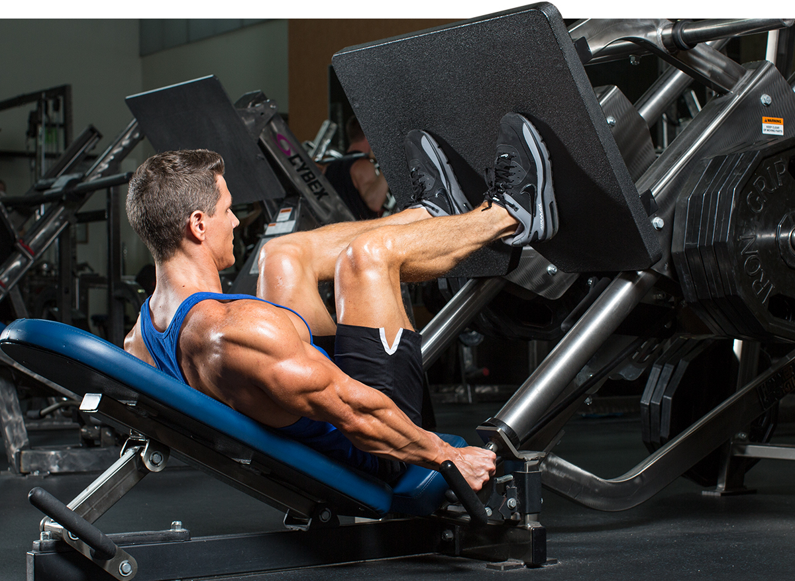

Legs workouts
If this is an article about building legs, why am I talking to you about symmetry? I'm getting there. I brought up symmetry because too many beginners skip out on leg-training (or just do a half-ass job of it) and build a horrible imbalance between the size of their upper and lower body. This completely throws off the symmetry of one's physique. There is nothing more ridiculous to see a guy in the gym with a well-developed upper body with toothpick legs.
Today you are going to start down a new road, a journey which few make and even fewer survive. The path will be clearly set out before you by the words in this article. The journey will be hard, harder than anything you have ever done before, but once you see the results you will continue this journey of leg training for life. Keep reading ...

Squats
Rectus Femoris
- Function: Extension and flexion when hip is extended.
- Location: Inserts at the hip and travels down the middle portion of the upper leg and reinserts at the knee.
- Exercise: Barbell Full Squat
Vastus Laterallis: Quad Sweep
- Function: Extension when hip is flexed.
- Location: Inserts 2/3 up the femur on the outer portion of the quad and reinserts at the knee.
- Exercises: Hack Squats
Vastus Mediallis: Tear Drop
- Function: Extension when hip is flexed.
- Location: Inserts 1/2 up the femur on the inner portion of the Quad and reinserts at the knee.
- Exercises: Leg Extensions
Hamstrings
Semitendinosus
- Function: Extends the hip joint and bends the knee.
- Location: Back middle portion of the thigh.
- Exercise: Barbell Lunges
Bicep Femoris: Long Head
- Function: Knee Flexion and Hip Extension.
- Location: Lower inner portion of the back of the thigh.
- Exercise: Seated Leg Curl
Bicep Femoris: Short Head
- Function: Knee Flexion and Hip Extension.
- Location: Upper Inner portion of the back of the thigh.
- Exercise: Seated Leg Curl
Calves
Gastrocnemius
- Function: Plantarflexion at the ankle.
- Location: Back portion of the lower leg. Diamond-shaped muscle people refer to as the calf.
- Exercise: Standing Calf Raises
Soleus
- Function: Plantarflexion at the ankle.
- Location: Back part of the lower leg that runs below the knee to the heel.
- Exercise: Seated Calf Raise
Rep Ranges
As you can see from the anatomy info above, there are a lot of muscles that make up the legs. The legs are used daily for basic activities like walking, standing, going upstairs, or just getting up from a chair. What does this mean to you as a trainer?
If you are looking to put size on your legs, half-ass workouts will not do anything; your legs are accustomed to working all day. Only dedication to intense hard work in the gym will break down the dense thick muscle fibers of the legs and their only choice will be to get bigger and stronger.
You need to force your legs to grow. Your legs will resist you. They will burn, shake and burn some more while you work out, but you need to push through and want more, as this is the only way to make your legs grow.
The legs consist of many muscles so you will need to use a good amount of volume, many angles and different exercises to stimulate all the muscles of the legs. Our rep range will depend on the exercise. I like to use a lower rep range (4-6) with most of the compound exercises to help build strength and a solid foundation.
With the isolation exercises I like to use a moderate (8-12) to high rep range (15-20). This helps pump up the muscle to deliver more nutrients and break up the fascia tissue for more growth.
All exercises should be performed in perfect form because bad form or habits you start now will follow you and will lead to lack of progress—or worse, an injury in the future. Many if not all the exercises will be new to you. So make sure you use the Exercise Guide on Bodybuilding.com to help you with your form.
Now that you understand which muscles make up your legs, their function, location, how to contract your back and the rep range needed to stimulate it, let's give you some workouts to help you build your legs.
Words To Live By
The workouts above are only as good as the work you put forth with them. If you continue down the path of half-ass workouts or no workouts at all for your legs, you will not see a difference.
If you decide enough is enough and you want to have big thick tree trunk legs then get ready to work. You need to hit each and every set with all you have, using perfect form and rest as long as you need but nothing more. No workout day is going to be harder than leg day, period. Now eat up and get to the gym, you have legs to build.
Good Luck!